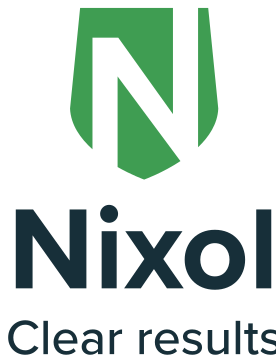
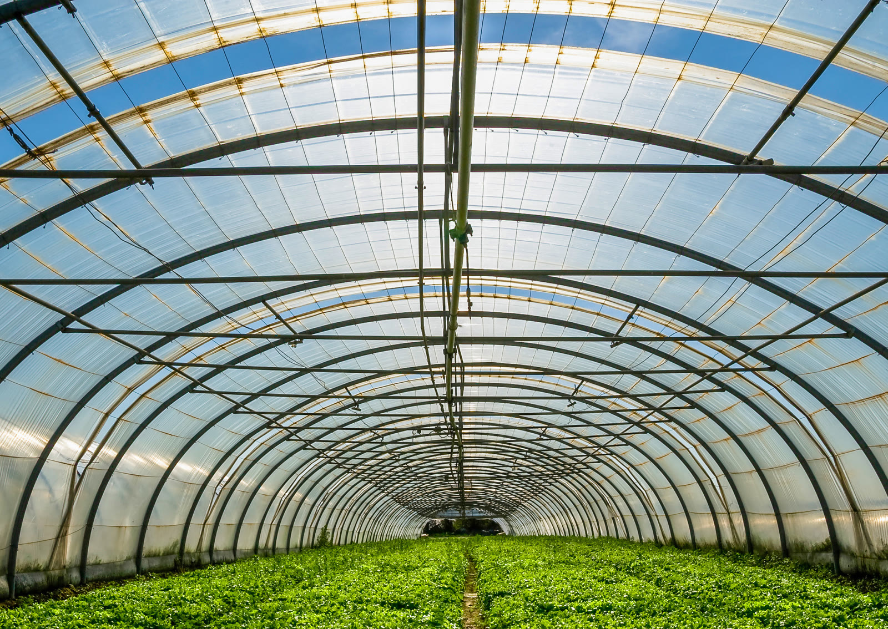
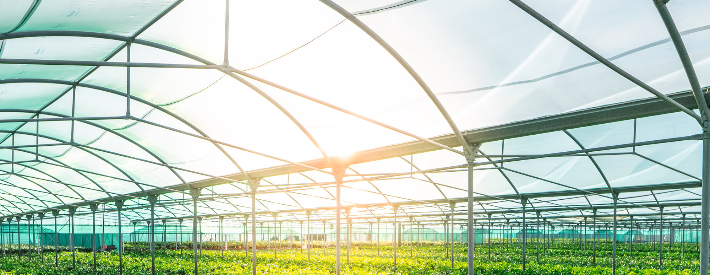

Nixol — Temporary greenhouse shading · A Baril Group brand
A temporary shading coating that protects young crops from the harsh sun — optimal light regulation on glass and polycarbonate, made from circular chalk, safe for people and plants, and completely removable.
Why Nixol
Young crops need light — but not too much of it. Nixol lays down a clear, controllable layer of shade that takes the edge off the sun, then washes away without a trace.

Light regulation, not blackoutHow it works
Nixol diffuses incoming sunlight into a soft, even glow across the crop. Growers get the climate they want — lower leaf temperatures and gentler peaks — while the canopy still receives the light it needs to grow.
What makes it different
Everything growers ask of a shading coating — and nothing they don't want left behind.
Circular & clean
Nixol is based on circular chalk — a naturally abundant, recycled mineral. It does its job for a season, then returns cleanly, leaving the glass and the environment as it found them.

Horticulture · Glass & polycarbonateApplications
A shade paint for greenhouses in horticulture — suitable for new construction and for the maintenance of existing greenhouses.
Certifications & quality marks
Developed and produced within Baril Group's certified management systems.
Try it yourself
Get more information, technical support, or a free sample of Nixol Transparant. Our team is happy to help you create the best climate for your crops.